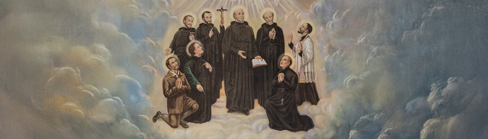

The Canadian Martyrs | | 加拿大殉道圣人
Jean de Brebeuf, born in Normandy, March 25, 1593. He mastered the Indian language and worked through all the district of Huronia. He founded Mission-outposts, converted thousands to the faith. Massive in body, strong yet gentle in character. He made a vow signed in his blood, never to refuse the offer of Martyrdom if asked to die for Christ. His visions of his future Martyrdom were fulfilled when captured March 16, 1649 and tortured for hours. He was martyred at the age of 56. Brebeuf is said to have the heart of a giant. He was known as the apostle of the Hurons. The Indians called him Echon.
聖若望・德・布雷伯夫, 於1593年3月25日生於法國諾曼第。他精通原住民語言，並在整個休倫地區傳教。他建立了多個傳教站，使數以千計的人皈依信仰。他體格魁梧，性格剛毅卻溫和。他曾以自己的血立誓：若為基督而被要求犧牲生命，絕不拒絕殉道的恩典。1649年3月16日，他被俘並遭受數小時酷刑，其先前預見的殉道最終成真。他於56歲時光榮殉道。布雷伯夫被譽為「擁有巨人之心的人」，亦被稱為「休倫人的宗徒」。原住民稱他為「Echon」。
圣若望・德・布雷伯夫，1593年3月25日生于法国诺曼底。他精通原住民语言，在休伦地区各地传教，建立传教据点，使数以千计的人归信天主教信仰。他体格魁梧，性格刚强而温和。他曾以自己的血立誓：若为基督而被要求献出生命，绝不拒绝殉道的恩典。他关于自己未来殉道的预见，在1649年3月16日被俘时得以实现；他遭受数小时的严酷折磨，最终英勇殉道，享年56岁。布雷伯夫被誉为“拥有巨人之心的人”，亦被称为“休伦人的宗徒”。原住民称他为“Echon”。
Isaac Jogues, born in Orleans, January 10, 1610. He came to Canada in 1636. He set out at once for Huronia where he supplied at Mission outposts, instructing and baptizing. He was captured by the Iroquois, brutally tortured, and made a slave. He escaped to France and returned a year later in Canada. He was sent as an emissary to discuss a treaty with the Iroquois. They blamed him for the disaster of a harvest failure. He was seized at Auriesville, N.Y. and cruelly beaten. A blow from a tomahawk gave him the crown of Martyrdom on October 18, 1646, at the age of 39.
聖依撒格・若格, 於1610年1月10日生於法國奧爾良。他於1636年來到加拿大，隨即前往休倫地區，在各傳教站服務，講授教理並施行洗禮。他後來被易洛魁人俘虜，遭受殘酷折磨並被貶為奴隸。他逃回法國後，一年後再次返回加拿大。後來，他被派遣作為使者，與易洛魁人商討和平條約。然而，由於農作失收，他們將災禍歸咎於他。他在紐約州奧里斯維爾（Auriesville）被捕並遭受毒打。1646年10月18日，一次戰斧重擊使他獲得殉道者的榮冠，終年39歲。
圣依撒格・若格，1610年1月10日生于法国奥尔良。他于1636年来到加拿大，随即前往休伦地区，在各传教站服务，讲授教理并施行洗礼。他后来被易洛魁人俘虏，遭受残酷折磨，并被贬为奴隶。他逃回法国后，于一年后再次返回加拿大。后来，他被派遣作为使者，与易洛魁人商讨和平条约。然而，由于庄稼歉收，他们将灾祸归咎于他。他在纽约州奥里斯维尔被捕，并遭到残忍殴打。1646年10月18日，一次战斧重击使他荣获殉道者的冠冕，终年39岁。
Gabriel Lalemant, born in Paris, October 10, 1610. His ambition was to labor in the Missions and he asked to be sent to the Canadian Missions. In 1646, his repeated request to be sent to New France was granted. In Canada, he arrived in Huronia in September 1648 where in words of Scriptures, he was destined to complete a long time in a short space. He was sent to assist Brebeuf with whom he was captured and tortured for seventeen hours at the stake. Gabriel Lalemant died on March 17, 1649, at the age of 39.
聖加俾額爾・拉勒芒, 於1610年10月10日生於法國巴黎。他立志投身傳教事業，並請求被派往加拿大傳教區。1646年，他多次請求後終於獲准前往新法蘭西。他於1648年9月抵達休倫地區；正如聖經所言，他註定要「在短時間內完成漫長的工作」。他被派去協助布雷伯夫神父，兩人一同被俘，並在木樁上遭受長達十七小時的酷刑。聖加俾額爾・拉勒芒於1649年3月17日殉道，終年39歲。
圣加俾额尔・拉勒芒，1610年10月10日生于法国巴黎。他立志投身传教事业，并请求被派往加拿大传教区。1646年，他多次请求后终于获准前往新法兰西。他于1648年9月抵达休伦地区，正如圣经所言：“在短暂的时间内完成漫长的工作。”他被派去协助圣若望・德・布雷伯夫，两人一同被俘，并在木桩上遭受长达十七小时的酷刑。圣加俾额尔・拉勒芒于1649年3月17日殉道，享年39岁。
Anthony Daniel, born in Normandy, May 27, 1601. He turned from the lure of worldly honors and answered a strong call to the Missions of Canada. He mastered the language and dreamed of forming future catechists among the Hurons who would instruct their tribe. He encouraged the converts to meet death as Christian should when his Mission was attacked by the Iroquois. He hastily baptized all he could and went out to face the enemy. His body was pierced with arrows and bullets. The Iroquois set fire to the Chapel and threw his body into the flames. He was martyred on July 4, 1648, at the age of 48.
聖安多尼・達尼爾, 於1601年5月27日生於法國諾曼第。他放棄世俗榮譽的誘惑，回應前往加拿大傳教的強烈召叫。他精通原住民語言，並夢想在休倫人中培育未來的傳教員，使他們能教導自己的族人。當他的傳教站遭易洛魁人襲擊時，他鼓勵信友以基督徒應有的精神面對死亡。他迅速為盡可能多的人施洗，然後親自出去面對敵人。他的身體被箭矢與子彈貫穿，易洛魁人隨後焚燒聖堂，並將他的遺體投入火中。他於1648年7月4日光榮殉道，終年48歲。
圣安多尼・达尼尔，1601年5月27日生于法国诺曼底。他放弃世俗荣誉的诱惑，回应前往加拿大传教的强烈召叫。他精通原住民语言，并梦想在休伦人中培养未来的传教员，使他们能够教导自己的族人。当他的传教站遭易洛魁人袭击时，他鼓励信友以基督徒应有的精神面对死亡。他迅速为尽可能多的人施洗，然后亲自出去面对敌人。他的身体被箭矢与子弹贯穿，易洛魁人随后焚烧圣堂，并将他的遗体投入火中。他于1648年7月4日光荣殉道，终年48岁。
Charles Garnier, born in Paris, May 25, 1606. He came to Huronia and labored thirteen years among the Hurons and Petuns. He had a strong devotion to Our Lady whom he acknowledged looked after him as a youth. Gentle, innocent, fearless, he succeeded in winning many souls to God among the Petuns. He was a victim of a massacre during which he suffered a blow of an Iroquois tomahawk on December 7, 1649, at the age of 43.
聖嘉祿・加尼耶, 於1606年5月25日生於法國巴黎。他來到休倫地區，在休倫人與佩頓人之中傳教十三年。他對聖母懷有深厚敬愛，並相信聖母自幼一直照顧著他。他溫和、純潔且無所畏懼，因此成功帶領許多佩頓人歸向天主。1649年12月7日，他在一次大屠殺中遭易洛魁戰斧襲擊而殉道，終年43歲。
圣嘉禄・加尼耶，1606年5月25日生于法国巴黎。他来到休伦地区，在休伦人与佩顿人中传教十三年。他对圣母怀有深厚敬爱，并相信圣母自幼一直照顾着他。他温和、纯洁且无所畏惧，因此成功带领许多佩顿人归向天主。1649年12月7日，他在一次大屠杀中遭易洛魁战斧袭击而殉道，终年43岁。
Noel Chabanel, born in Saugues, February 2, 1613. Experiencing a strong desire to consecrate himself to the Canadian Missions, he arrived in Huronia in 1643. The enthusiasm of the young missionary quickly lost its glamour. Unable to learn the Indian language, feeling useless in ministry, sensitive to the surroundings, his was to be one unbroken chain of disappointments, an ordeal that he immediately called himself a bloodless Martyrdom. For two years he stood in the shadow of dead and was slain secretly by an apostate Huron on December 8, 1649 at the age of 36.
聖諾厄爾・沙巴內爾, 於1613年2月2日生於法國索格（Saugues）。他深感渴望，願將自己奉獻於加拿大傳教事業，因此於1643年抵達休倫地區。然而，這位年輕傳教士最初的熱忱很快被現實磨鍊。由於無法學會原住民語言，加上感到自己在牧靈工作中毫無成效，又難以適應當地環境，他的生活充滿失望與考驗。他稱這種痛苦為「無血的殉道」。兩年間，他始終生活在死亡陰影之下，最終於1649年12月8日被一位背教的休倫人秘密殺害，終年36歲。
圣诺厄尔・沙巴内尔，1613年2月2日生于法国索格。他深感愿望，要将自己奉献于加拿大传教事业，因此于1643年抵达休伦地区。然而，这位年轻传教士最初的热忱很快被现实磨炼。由于无法学会原住民语言，加上感到自己在牧灵工作中毫无成效，又难以适应当地环境，他的生活充满了失望与考验。他称这种痛苦为“无血的殉道”。两年来，他始终生活在死亡阴影之中，最终于1649年12月8日被一位背教的休伦人秘密杀害，终年36岁。
Rene Goupil, born in Anjou, May 15, 1608. He studied medicine and then offered his services to the Jesuit Missions in Canada. He arrived in 1640 and served French colonists and native converts with patience and charity. He was captured with Isaac Jogues in 1642. On the journey to Mohawk country he begged Isaac Jogues to receive his vows. A month later he was martyred for making the sign of the cross on a little Indian child. He was martyred at Auriesville, N.Y. on September 29, 1642, at the age of 34.
聖勒內・古皮爾, 於1608年5月15日生於法國昂茹（Anjou）。他曾學習醫學，後來主動加入加拿大的耶穌會傳教事業。他於1640年抵達加拿大，以耐心與愛德服務法國殖民者及原住民教友。1642年，他與聖依撒格・若格一同被俘。在前往莫霍克地區途中，他請求若格神父接納他的聖願。一個月後，他因在一名原住民孩童身上畫十字聖號而遭殺害殉道。他於1642年9月29日在紐約州奧里斯維爾光榮殉道，終年34歲。
圣勒内・古皮尔，1608年5月15日生于法国昂茹。他曾学习医学，后来主动加入加拿大的耶稣会传教事业。他于1640年抵达加拿大，以耐心与爱德服务法国殖民者及原住民教友。1642年，他与圣依撒格・若格一同被俘。在前往莫霍克地区途中，他请求若格神父接纳他的圣愿。一个月后，他因在一名原住民孩童身上划十字圣号而遭杀害殉道。他于1642年9月29日在纽约州奥里斯维尔光荣殉道，终年34岁。
Jean de la Lande, born in Dieppe, date unknown. He was a young layman who offered his services to the Jesuits in New France. He accompanied Isaac Jogues to the Mohawk Mission in 1646. Knowing what he might have to suffer, he gladly offered himself as a companion to Jogues and looking to God to protect him and to be his reward if the sacrifice of his life was demanded. With Isaac Jogues he was tortured and threatened with death. He saw the martyrdom of Jogues on October 18. He himself was martyred at the hands of the Iroquois on following day at Auriesville, N.Y.
聖若望・德・拉朗德, 生於法國迪耶普（Dieppe），出生日期不詳。他是一位年輕平信徒，自願為新法蘭西的耶穌會士服務。1646年，他陪同聖依撒格・若格前往莫霍克傳教區。雖然知道自己可能遭受的苦難，他仍甘願成為若格神父的同伴，並全心信賴天主的保護；若需要獻出生命，他也願將此作為奉獻。他與若格一同遭受酷刑，並被威脅處死。他親眼目睹若格於10月18日殉道，而他自己則於翌日在紐約州奧里斯維爾被易洛魁人殺害殉道。
圣若望・德・拉朗德，生于法国迪耶普，出生日期不详。他是一位年轻平信徒，自愿为新法兰西的耶稣会士服务。1646年，他陪同圣依撒格・若格前往莫霍克传教区。虽然知道自己可能遭受的苦难，他仍甘愿成为若格神父的同伴，并全心信赖天主的保护；若需要献出生命，他也愿将此作为奉献。他与若格一同遭受酷刑，并被威胁处死。他亲眼目睹若格于10月18日殉道，而他自己则于次日在纽约州奥里斯维尔被易洛魁人杀害殉道。
Holy Martyrs and patrons, protect this land which you have blessed by the shedding of your blood. Renew in these days our Catholic faith which you helped to establish in this new land. Bring all our fellow citizens to a knowledge and love of the truth. Make us zealous in the profession of our faith so that we may continue and perfect the work which you have begun with so much labour and suffering. Pray for our homes, our schools, our missions, for vocations, for the conversion of sinners, the return of those who have wandered from the fold, and the perseverance for all the Faithful. And foster a deeper and increasing unity among all Christians. Amen.
神聖的殉道聖人及我們的主保，求你們護佑這片因你們傾流寶血而蒙受祝福的土地。求你們在今日更新你們曾協助在這片新土地上建立的天主教信仰。求你們引領我們所有的同胞認識真理、熱愛真理。求你們使我們熱心宣認信仰，好能繼續並完成你們以無數勞苦與苦難所開展的事業。請為我們的家庭、學校、傳教事業、聖召、罪人的悔改、迷失者重返羊棧，以及所有信友恆心堅守信仰而祈禱。也求你們促進所有基督徒之間更深、更日益增長的合一。阿們。
神圣的殉道圣人及我们的主保，求你们护佑这片因你们倾流宝血而蒙受祝福的土地。求你们在今日更新你们曾协助在这片新土地上建立的天主教信仰。求你们引领我们所有的同胞认识真理、热爱真理。求你们使我们热心宣认信仰，好能继续并完成你们以无数劳苦与苦难所开展的事业。请为我们的家庭、学校、传教事业、圣召、罪人的悔改、迷失者重返羊栈，以及所有信友恒心坚守信仰而祈祷。也求你们促进所有基督徒之间更深、更日益增长的合一。阿们。
In the Hotel-Dieu at Quebec a very sick Protestant soldier vehemently declared to the nuns, anxious to convert him, that he would die rather than abandon the faith of his fathers. His pious nurse clandestinely dipped a relic of Jean de Brebeuf into the sufferer’s medicine, praying that the martyr would cure the soldier both in body and mind. Though the soldier’s health did not improve, he spontaneously asked to receive instructions and became a Catholic.
A second instance was considered much more striking than the first. In 1663 the venerable relics of Father Brebeuf were considered to be directly instrumental in curing a woman of demoniacal possession. Charles de Lauson de Charny, Bishop Laval’s vicar-general, testified that on August 9, 1663, a woman, suffering for two years from possession by a demon, was instantly cured when she touched some relics of Father Brebeuf.
In the years immediately following the martyrdom of Jean de Brebeuf, cures of both body and mind, attributed to his intercession, were, apparently, granted chiefly to those among whom he lived and labored. Undoubtedly, the most striking such blessing was received by the Iroquois who was considered to have been the martyr’s executioner. He was an Oneida whom the French called Cendre-Chaude, a name which might be rendered in English as “Hot Cinder.” He not only became a Christian, but an enthusiastic apostle. Through his life Hot Cinder manifested the greatest devotion and reverence for his heroic victim, Jean de Brebeuf. Hot Cinder’s greatest boast was that it fell to him to have dealt the deathblow to Father Brebeuf.
Perhaps the most accurately attested case of Jean de Brebeuf’s celestial intervention concerned Mere Marie de Saint Augustin, an Augustinian nun at the Hotel-Dieu at Quebec. Born Marie-Catherine de Simon de Longpre at Saint-Sauveur-de-Vicombte, Lower Normandy, in 1632, she joined a convent of nursing nuns at Bayeux where her older sister had preceded her. She was then only twelve years old. Her mistress of novices, considering her a rather frivolous child, thought of dismissing her, but Marie-Catherine refused to leave, saying that she would depart from Bayeux only for New France. She came to Quebec in 1648 when she was only sixteen.
Despite frequent bouts of serious illness, Mere Marie was treasured at the hospital because she was a very competent nurse, a good businesswoman, and, above all, because she was a true mystic. Though she never saw Father Brebeuf in the flesh, she very seriously considered him here sole spiritual director who had been assigned here by God himself. Mere Marie frequently saw Father Brebeuf who always carried a palm, indicating that he was a martyr.
When the nun died in 1668, Bishop Laval, himself a very holy man, asked Father Ragueneau to write her biography. Ragueneau published his La Vie de Mere Catherine de Saint-Augustin at Paris in 1671. The book, replete with references to Father Brebeuf, gave further impetus to his cult both in Canada and France.
在魁北克的「天主醫院」（Hotel-Dieu）裡，一位身患重病的新教士兵堅決向那些熱切希望使他皈依的修女們表示：他寧死也不願放棄祖先的信仰。照顧他的虔誠護士暗中將一件若望・德・布雷伯夫（Jean de Brébeuf）聖髑浸入病人的藥物中，並祈求這位殉道者能醫治這名士兵的身體與靈魂。雖然士兵的身體狀況並未改善，但他卻主動要求接受教理講授，最終皈依了天主教。
第二個事例被認為比第一個更加顯著。1663年，人們相信布雷伯夫神父可敬的聖髑直接促成了一名婦女從附魔中獲得痊癒。拉瓦爾主教（Bishop Laval）的總代理人查理・德・洛宗・德・沙尼（Charles de Lauson de Charny）作證說，1663年8月9日，一名受惡魔附身長達兩年的婦女，在觸摸了布雷伯夫神父的聖髑後，立刻痊癒。
在若望・德・布雷伯夫殉道後的數年間，許多身心方面的痊癒，被歸因於他的代禱，而這些恩典顯然主要賜予了那些曾與他共同生活、接受他牧靈服務的人們。毫無疑問，其中最引人注目的恩寵，是賜給了一位被認為是這位殉道者行刑者的易洛魁人（Iroquois）。他是一位奧奈達族（Oneida）人，法國人稱他為「熱灰燼」（Cendre-Chaude；英文可譯作 “Hot Cinder”）。他不僅成為了一名基督徒，更成為一位充滿熱忱的宗徒。在他的一生中，「熱灰燼」始終對他英勇的受害者——若望・德・布雷伯夫——懷有極大的敬愛與崇敬。他最引以為傲的事，便是自己曾親手給予布雷伯夫神父致命一擊。
或許，關於若望・德・布雷伯夫天上代禱最有確切見證的事例，涉及魁北克「天主醫院」的一位奧斯定會修女——聖奧思定的瑪利亞修女（Mère Marie de Saint-Augustin）。她原名瑪利亞－加大利納・德・西蒙・德・隆普雷（Marie-Catherine de Simon de Longpré），1632年出生於下諾曼第的聖索沃爾－德－維孔特（Saint-Sauveur-de-Vicomte）。她十二歲時便加入了巴約（Bayeux）一所護理修女會院，她的姊姊早已在那裡修道。由於她的初學生導師認為她仍是個頗為輕浮的孩子，因此曾考慮將她遣離。然而，瑪利亞－加大利納拒絕離開，並表示，除非前往「新法蘭西」（New France），否則她絕不會離開巴約。1648年，年僅十六歲的她來到魁北克。
儘管她經常罹患重病，瑪利亞修女在醫院中仍備受珍視，因為她不僅是一位極有能力的護士，也善於管理事務，更重要的是，她是一位真正的神秘神修者。雖然她生前從未親眼見過布雷伯夫神父，但她始終深信，他是天主親自賜予她唯一的神師。瑪利亞修女經常見到布雷伯夫神父的神視，而他總是手持棕櫚枝，象徵他是一位殉道者。
當這位修女於1668年逝世後，拉瓦爾主教——一位同樣極具聖德的人——請求拉格諾神父（Father Ragueneau）為她撰寫傳記。拉格諾於1671年在巴黎出版了《聖奧思定的加大利納修女傳》（La Vie de Mère Catherine de Saint-Augustin）。此書多次提及布雷伯夫神父，進一步推動了他在加拿大與法國的敬禮。
在魁北克的天主圣心医院（Hotel-Dieu）里，一位病重的新教士兵坚决向那些热心希望他皈依的修女们表示：他宁愿死，也绝不放弃祖先的信仰。照顾他的虔诚护士暗中将一件圣若望・德・布雷伯夫的圣髑浸入病人的药物中，并祈求这位殉道圣人医治这名士兵的身心。虽然士兵的身体并未康复，但他却主动请求学习天主教教义，并最终皈依成为天主教徒。
第二个事迹被认为比第一个更加显著。1663年，人们相信布雷伯夫神父的可敬圣髑直接促成了一位被恶魔附身妇女的痊愈。拉瓦尔主教的总代牧查理・德・洛宗・德・沙尼（Charles de Lauson de Charny）作证说：1663年8月9日，一位被恶魔附身长达两年的妇女，在触摸布雷伯夫神父的圣髑后，立即获得痊愈。
在圣若望・德・布雷伯夫殉道后的几年间，许多归因于他转祷而获得的身心痊愈，似乎主要发生在那些曾与他共同生活和接受他牧灵照顾的人当中。其中最引人注目的恩宠，莫过于赐给一位被认为曾亲手处决这位殉道者的易洛魁人。他属于奥奈达人部族，法国人称他为 “Cendre-Chaude”，英文意思大约是“炽热余烬（Hot Cinder）”。他不仅皈依成为基督徒，更成为一位热忱的宗徒。在他的一生中，“Hot Cinder” 对自己英勇的受害者——圣若望・德・布雷伯夫——始终怀有极深的敬爱与崇敬。他最大的“荣耀”，竟是自己曾给予布雷伯夫致命的一击。
或许关于圣若望・德・布雷伯夫天上转祷最有确实证据的事迹，涉及魁北克天主圣心医院的一位奥斯定会修女——圣奥斯定的玛利亚修女（Mere Marie de Saint-Augustin）。她于1632年出生于法国下诺曼底的Saint-Sauveur-de-Vicomte，本名玛丽－凯瑟琳・德・西蒙・德・隆普雷（Marie-Catherine de Simon de Longpre）。十二岁时，她进入巴约（Bayeux）的一所护理修女修院，她的姐姐早已在那里修道。她的初学导师认为她性格轻浮，一度想将她遣离修院，但玛丽－凯瑟琳拒绝离开，并表示自己只愿为了前往新法兰西而离开巴约。1648年，年仅十六岁的她来到魁北克。
尽管她经常遭受严重疾病折磨，医院里的众人依然十分珍视她，因为她不仅是一位极其优秀的护士，也善于管理事务，更重要的是，她是一位真正的神秘神修者。虽然她从未在世时亲眼见过布雷伯夫神父，但她深信他是天主亲自指派给她唯一的神师。玛利亚修女经常看见布雷伯夫神父的神视，而他总是手持棕榈枝，象征他殉道者的身份。
1668年，当这位修女去世后，同样以圣德闻名的拉瓦尔主教请求拉格诺神父（Father Ragueneau）为她撰写传记。1671年，拉格诺神父在巴黎出版了《圣奥斯定的凯瑟琳修女传》（La Vie de Mere Catherine de Saint-Augustin）。这本书中多次提及布雷伯夫神父，也进一步推动了他在加拿大与法国的敬礼传播。
In his decreee, Militantem ecclesiam, declaring the canonization of Jean de Brebeuf and his companions, Pius XI recounted the essential details of two.
Marie Robichaud, born in 1898 at Shippigan, New Brunswick, entered a congregation of nursing sisters in 1920. Five years later, in 1925, she was gravely afflicted with fibrocaseous tubercular peritonitis. Attending physicians finally declared that further treatment was useless. The afflicted nun, and her community, sought the miraculous intercession of the North American martyrs. On June 9, 1925, she was instantly and permanently cured.
Alexandrina Ruel, a healthy young lady until 1907, was stricken with severe pains in her stomach. When an operation was performed for the removal of her appendix, the organ was declared to be tubercular. Her constant state of poor health became critical in 1918 when a second operation revealed tubercular peritonitis affecting the whole abdomen. When the medical profession gave up on the case, she had recourse to the intercession of the North American martyrs. She was cured, instantly and permanently, as her physicians attested under oath.
在其宗座谕令 Militantem Ecclesiam 中，教宗庇护十一世在宣告圣若望・德・布雷伯夫及其同伴封圣时，概述了其中两个重要奇迹的要点。
玛丽・罗比肖出生于1898年新不伦瑞克省希佩甘（Shippigan）。1920年，她进入一个护理修女团体。五年后的1925年，她罹患严重的结核性纤维干酪性腹膜炎。主诊医生最终宣告已无任何治疗方法可行。患病的修女与其团体遂转求北美殉道圣人的转祷。1925年6月9日，她被立即且永久性地治愈。
亚历山德丽娜・鲁埃在1907年之前一直身体健康，后来开始出现严重的胃痛。当她接受阑尾切除手术时，医生发现该器官已呈结核性病变。她的健康状况在1918年进一步恶化，第二次手术显示结核性腹膜炎已波及整个腹腔。当医学界已放弃治疗时，她转而求助北美殉道圣人的代祷。根据其医生在宣誓下的证明，她被立即且永久性地治愈。
Before the Canadian Martyrs shed their blood for the Kingdom of God, they lived a remarkable life.
Song: St. Jean de Brebeuf (1593-1649) wrote the first Christmas song in Canada, the “Huron Carol”, (CBWII, #467), or "Jesus Anaonhia".
Sports: It is also Brebeuf from whom the name “Lacrosse” is derived. Lacrosse originated in the 1400’s, but it was named by Fr. Jean de Brebeuf in 1636 as ‘la croix’ because of the resemblance of the sticks used in the game to the cross.
Literature: St. Jean de Brebeuf also compiled the first Huron-English dictionary.
Medicine: St. Rene Goupil is the patron
在这些加拿大殉道圣人为天主的国度流血之前，他们已度过了非凡的一生。
歌曲： 圣若望・德・布雷伯夫（1593–1649）创作了加拿大第一首圣诞歌曲——《休伦圣诞颂歌》（“Huron Carol”，CBWII #467），亦称“Jesus Anaonhia”。
体育： “Lacrosse（长曲棍球）”这一名称也源自布雷伯夫神父。该运动起源于15世纪，但在1636年由若望・德・布雷伯夫神父命名为“la croix”（十字架），因为比赛所用球棍的形状与十字架相似。
文学： 圣若望・德・布雷伯夫也编纂了第一本休伦语—英语词典。
医学： 圣雷内・古皮尔是主保圣人。
The Jesuit Relations and allied documents
Saint Louis : Huron Indian village and Jesuit mission site / W. Jury, UWO 1955 map. Ill.
Saints in the wilderness : the story of St. Isaac Jogues and the Jesuit adventure in the New World. Garden City NY : Doubleday, 1964 216p.
Jesuit & savage in the New France / John Hopkins Kennedy, New Haven : Yale University Press 1950 (Yale historical publication, Miscellany; 50) 206p fold map.
The Indians of North America ed by Edna Kenton from “The Jesuits relations and allied documents: travels and explorations of the Jesuit missionaries in New France 1610-1791". Ill., maps c1927 (Jesuits, letters from Mission, [N. America]).
The Jesuits Martyrs of North America, Isaac Jogues, Jean de Brebeuf…. / John J. Wynne, SJ N.Y.: Universal Knowledge Foundation. c1925 248 p. ports. Maps.
The First Martyrs of North America – the Story of the Eight Jesuit Martyrs / John A. O’Brien Notre Dame Ind.: University of Notre Dame Press 1960 c1953, 310p maps.
(C: 1953 “The American Martyrs”)
Saint Among Savages : the Life of Isaac Jogues / Francis Talbot, S.J., New York : Doubleday 1961.
耶稣会关系及相关文献
圣路易斯：休伦印第安村庄与耶稣会传教站 / W. Jury，西安大略大学（UWO），1955年地图，附插图。
《荒野中的圣人：圣依撒格・若格的故事与耶稣会在新大陆的传教历程》/ Garden City, 纽约：Doubleday出版社，1964年，216页。
《新法兰西中的耶稣会士与“野人”》/ John Hopkins Kennedy，纽黑文：耶鲁大学出版社，1950年（耶鲁历史出版物，杂集第50号），206页，折叠地图。
《北美印第安人》编辑：Edna Kenton，选自《耶稣会关系及相关文献：新法兰西耶稣会传教士的旅行与探险（1610–1791）》插图、地图，约1927年（耶稣会传教书信，北美）。
《北美耶稣会殉道者：依撒格・若格、若望・德・布雷伯夫等》/ John J. Wynne, S.J. 纽约：Universal Knowledge Foundation，约1925年，248页，附肖像与地图。
《北美最初的殉道者——八位耶稣会殉道者的故事》/ John A. O’Brien，印第安纳州圣母大学出版社，1960年（1953年初版《美洲殉道者》），310页，地图。
《在野蛮人中的圣人：依撒格・若格的生平》/ Francis Talbot, S.J.，纽约：Doubleday出版社，1961年。